Project Title: HearHelper - An Assistive Communication and Accessibility Web Application for Hearing-Impaired Users
Course: Bachelor of Computer Applications (BCA)
University: Bangalore University
Academic Year: 2025-2026
Submitted By:
[Student Name 1 / Ganesh] - [USN][Student Name 2 / Puneeth] - [USN]Under the Guidance of: [Guide Name]
Department: Department of Computer Applications
College: [College Name]
Place: Bengaluru
Formatting Note
This report draft is intentionally expanded for a 60+ page submission when formatted in the usual BCA style with Times New Roman, 12 pt body text, 1.5 line spacing, justified alignment, A4 page size, and rendered diagrams. Institutional details such as certificate wording, signatures, margin specification, and final pagination should be adjusted according to the department-approved template before hard binding.
This is to certify that the project report entitled "HearHelper - An Assistive Communication and Accessibility Web Application for Hearing-Impaired Users" is a bonafide work carried out by:
[Student Name 1 / Ganesh][Student Name 2 / Puneeth]bearing USN numbers [USN 1] and [USN 2], in partial fulfillment of the requirements for the award of the degree of Bachelor of Computer Applications of Bangalore University, during the academic year 2025-2026, under my guidance and supervision.
| Guide Signature | Head of Department | Principal |
|---|---|---|
[Guide Name] | [HOD Name] | [Principal Name] |
Place: [College / Bengaluru]
Date: [To be filled]
We hereby declare that the project report entitled "HearHelper - An Assistive Communication and Accessibility Web Application for Hearing-Impaired Users" is the original work carried out by us under the guidance of [Guide Name], Department of Computer Applications, [College Name], Bengaluru.
We further declare that:
We express our sincere gratitude to our project guide, [Guide Name], for constant guidance, encouragement, and valuable suggestions throughout the development of this project. The guidance received during problem definition, design, implementation, and report preparation helped us complete this work in a disciplined and meaningful manner.
We thank the Head of the Department, [HOD Name], the Principal, [Principal Name], and the management of [College Name] for providing academic support, infrastructure, and encouragement. We also thank our faculty members, friends, classmates, and all those who shared suggestions and usability feedback during the testing of the application.
We gratefully acknowledge the creators and maintainers of the technologies used in the project, including Firebase, Web Speech API, MediaPipe, TensorFlow, Flask-SocketIO, JavaScript, HTML5, and CSS3. These tools made it possible to build an integrated accessibility-oriented solution within the scope of a BCA final year project.
Finally, we dedicate this effort to the hearing-impaired community and to the larger idea of inclusive technology. HearHelper was developed not merely as a software submission but as a socially relevant system intended to make communication more accessible and more dignified.
Communication barriers remain a daily reality for many individuals with hearing impairment. Although modern assistive tools exist, they are often fragmented across different applications, each handling only one part of the communication problem. A user may need one tool for speech-to-text, another for chat, a different platform for sign language reference, and a separate source for disability-related support information. This fragmentation reduces convenience and weakens accessibility.
The project HearHelper addresses this issue by providing a browser-based assistive communication platform that combines multiple related features in a single system. The current project includes user authentication, a dashboard, live speech transcription, community chat, a benefits information portal, settings and personalization, feedback handling, an admin analytics page, and a sign-language assistance module. The sign-language area further extends into an experimental AI workflow through MediaPipe-based browser recognition and an optional Python backend using TensorFlow and Flask-SocketIO.
The system is implemented using HTML5, CSS3, JavaScript, Firebase Authentication, Cloud Firestore, Firebase Hosting, and browser-native speech APIs. User registration and shared cloud data are managed through Firebase. Speech recognition and text-to-speech are handled in the browser to reduce latency and server dependence. The sign-language extension demonstrates how gesture recognition can be integrated into a broader assistive platform rather than treated as a separate isolated experiment.
HearHelper is significant because it approaches accessibility as an integrated design problem. Instead of solving only transcription or only messaging, it combines multiple forms of communication support and personalization. The project is also academically valuable because it demonstrates modular system design, cloud integration, accessibility-aware UI development, and exploratory AI components within a realistic BCA project scope. The system is affordable, device-independent, extensible, and suitable for future enhancement into a more production-ready accessibility platform.
Update page numbers after final export to Word or PDF.
| Abbreviation | Meaning |
|---|---|
| AI | Artificial Intelligence |
| API | Application Programming Interface |
| BCA | Bachelor of Computer Applications |
| CSS | Cascading Style Sheets |
| DFD | Data Flow Diagram |
| ER | Entity Relationship |
| HTML | HyperText Markup Language |
| JS | JavaScript |
| ML | Machine Learning |
| STT | Speech to Text |
| TTS | Text to Speech |
| UI | User Interface |
| UX | User Experience |
| WCAG | Web Content Accessibility Guidelines |
Communication is one of the most important foundations of human participation in society. Whether the setting is educational, professional, social, domestic, medical, or administrative, communication enables users to understand instructions, express needs, ask questions, share feelings, and collaborate with others. For users with hearing impairment, however, communication often becomes a barrier rather than a bridge. In many real-life situations, spoken language is assumed to be immediately accessible. When it is not, the individual must depend on lip reading, written notes, interpretation by another person, or separate assistive tools.
This challenge is not only technical but social. A delay in communication can become a delay in participation. A misunderstood conversation can become a missed opportunity. A lack of accessible tools can lead to frustration, dependence, and avoidable exclusion. Modern digital technology has improved assistive possibilities, but the ecosystem is still fragmented. One application may provide speech-to-text, another may support messaging, and another may be dedicated to sign language learning or video references. Users often move across different tools for tasks that belong naturally to the same communication process.
HearHelper was developed to address this fragmentation through an integrated assistive web platform. The current project brings together real-time transcription, user-to-user community messaging, settings personalization, informational support through a benefits portal, feedback and admin monitoring, and sign-language assistance. The sign-language module itself goes beyond a static dictionary approach by including webcam-driven interaction and experimental AI support through MediaPipe and a separate Python backend.
Because the system is browser-based, it reduces the need for dedicated installation and works across a range of common devices. Because it uses Firebase services, it avoids the complexity of building identity and storage mechanisms from scratch. Because it uses browser-native speech APIs, it makes certain real-time interactions faster and more practical. This combination makes HearHelper a suitable academic project that still addresses a meaningful real-world problem.
The need for HearHelper comes from a combination of accessibility gaps and technology opportunity. The major needs identified are:
These needs are practical and immediate. In many situations, the communication challenge is not caused by the total absence of technology, but by the absence of integrated, user-friendly, and purpose-oriented technology. HearHelper attempts to solve that problem within the scope of a BCA final year project.
People with hearing impairment often face difficulty in understanding spoken communication, participating in day-to-day interactions, accessing integrated support tools, and finding consolidated accessibility-related information. Existing digital tools usually handle isolated tasks such as transcription, chat, or sign learning, but do not provide a unified assistive environment. Therefore, there is a need for an integrated, accessible, and web-based system that supports communication, personalization, information access, and sign-language assistance in one platform.
The major objectives of HearHelper are:
The scope of the current project includes:
The scope does not include a full-scale native mobile app, offline-first operation, production-grade role-based security, or sign-language recognition for a complete vocabulary. The current system is intended as a functional academic project with strong practical relevance and clear future expansion paths.
The project followed an incremental and modular development approach. The system was divided into independent units such as authentication, transcription, communication, benefits, settings, feedback, admin, and AI assistance. Each module was built and refined separately before integration. This approach reduced complexity, allowed repeated testing, and supported continuous improvement without blocking overall progress.
The sign-language component was treated as an extendable subsystem. A browser-side gesture recognition interface was first designed, and an optional Python backend for model-based prediction was then added as an experimental enhancement. This demonstrates a practical understanding of how core features and experimental features can coexist in a project repository.
HearHelper is significant because it combines technical learning with social relevance. It is not a purely theoretical software exercise; it addresses a real problem experienced by a real user group. It also demonstrates the value of accessible design, modular programming, cloud integration, and AI experimentation within the BCA curriculum. The project shows that a web application can do more than display information; it can actively support inclusive communication.
The remaining chapters of this report are organized as follows:
Before building HearHelper, it was necessary to study the broader domain of assistive communication systems. A good project in this area cannot be designed only from a programming point of view. It must also consider accessibility, communication behavior, user trust, clarity of interaction, and practical deployment constraints. The literature and domain analysis therefore focused on three major themes: existing assistive applications, communication workflows of hearing-impaired users, and the role of cloud and AI technologies in accessibility-oriented web systems.
The broad categories of existing systems relevant to this project are summarized below.
Speech-to-text applications convert spoken language into readable text. These tools are highly useful in classrooms, offices, healthcare environments, and family conversations. Their strengths include immediate transcription, low input effort, and usefulness in noisy or formal situations. However, they usually focus only on converting audio into text and do not provide integrated settings, community interaction, disability-specific information, or sign-language support.
Messaging applications enable text-based communication and can reduce the burden of spoken interaction. However, they are generally designed for all users rather than specifically for accessibility. They may not provide quick phrase support, hearing-oriented UI simplification, font scaling, or integrated speech workflows. As a result, they do not fully solve accessibility-specific communication barriers.
Sign language platforms are useful for education, awareness, and practice. They often include video lessons, alphabet charts, examples of signs, and beginner-friendly references. Their limitation is that they are usually educational tools rather than integrated daily communication platforms. They do not necessarily connect with chat, transcription, user accounts, or live communication assistance.
Government and public-service portals publish information about schemes, concessions, scholarships, and pensions for persons with disabilities. Such information is important but often distributed across multiple sources and presented in a generic administrative format rather than an accessibility-centered interface. Users may know that help exists but still struggle to locate relevant material efficiently.
Recent academic and prototype systems using MediaPipe, landmark extraction, TensorFlow, LSTM models, and webcam pipelines have shown that gesture-based recognition is feasible even on commodity devices. However, many such systems remain isolated demonstrations. They may recognize gestures accurately in controlled settings but are not integrated into broader assistive user platforms.
| Feature | STT Tools | Messaging Apps | Sign Learning Sites | Benefits Portals | HearHelper |
|---|---|---|---|---|---|
| Live speech transcription | Yes | No | No | No | Yes |
| User-to-user chat | Rare | Yes | No | No | Yes |
| Hearing-focused settings | Limited | Limited | Limited | No | Yes |
| Sign-language interaction | No | No | Partial | No | Yes |
| Benefits awareness | No | No | No | Yes | Yes |
| Unified browser workflow | Rare | Partial | Partial | Yes | Yes |
| Admin insights | No | Limited | No | No | Yes |
Table 2.1 - Comparison with Existing Systems
The comparison shows that current systems are usually strong in one dimension and weak in integration. HearHelper was therefore conceived as a unified accessibility workflow rather than a single-feature application.
The domain study revealed the following common limitations:
These observations directly influenced the structure of HearHelper.
The gap identified in the domain is the lack of a lightweight, browser-accessible, integrated platform that combines live transcription, communication, profile personalization, benefits guidance, admin monitoring, and experimental sign-language interaction. HearHelper attempts to fill that gap within the academic scope of a BCA project by balancing practical usability with extendable design.
The proposed system is a web-based platform for hearing-impaired communication support. It is not limited to one use case. Instead, it supports a set of related workflows:
The project uses a hybrid model. Essential user-facing functionality is provided through the browser and Firebase. Experimental AI-based sign-language prediction is supported through MediaPipe and an optional Python backend. This separation allows the core platform to remain usable even if the advanced AI backend is not running.
The feasibility of HearHelper was evaluated from technical, economic, operational, schedule, and ethical perspectives.
| Feasibility Type | Observation | Conclusion |
|---|---|---|
| Technical | Technologies such as HTML, CSS, JS, Firebase, and MediaPipe are accessible and well documented. | Feasible |
| Economic | Development tools are free or low cost and suitable for student projects. | Feasible |
| Operational | Users can interact through familiar browser-based interfaces. | Feasible |
| Schedule | Modular development supports completion within an academic timeline. | Feasible |
| Ethical / Legal | Accessibility goal is socially valuable, but production security and privacy rules require future strengthening. | Feasible with caution |
Table 2.2 - Feasibility Analysis
The system is technically feasible because its major parts are supported by mature technologies. Firebase reduces backend management effort. Browser APIs reduce server-side workload for speech processing. MediaPipe provides ready-to-use gesture recognition infrastructure. Python-based ML tools are suitable for experimental training and inference.
The project is economically feasible because it relies on open technologies and common devices. No expensive hardware is required for the base system. Even the sign-language module can run on an ordinary webcam.
The project is operationally feasible because it provides interface-level simplicity. The user can navigate through cards, forms, buttons, and chat panels that follow recognizable interaction patterns. The application can be used by students, families, and general users without specialized technical training.
The modular structure allows teams to implement and test one feature set at a time. This is especially valuable in an academic project where some modules may stabilize earlier than others.
An incremental prototyping model best describes the development of HearHelper. A basic web application skeleton was created first. Core modules such as login, home navigation, and transcription were built early. Additional modules such as community, benefits, settings, feedback, admin, and sign-language support were integrated progressively. This approach made the project manageable and encouraged continuous refinement.
The domain of assistive communication places strong emphasis on usability, trust, clarity, responsiveness, and practical usefulness. In many business applications, minor UI inconvenience may only reduce efficiency. In accessibility software, the same inconvenience can become a barrier. For that reason, the project gives importance not only to algorithms and storage but also to visible controls, readable text, status indicators, history panels, and simple navigation.
This chapter established that existing tools are fragmented and that there is strong value in a unified accessibility-centered communication platform. It also showed that the project is technically, economically, and operationally feasible within a BCA academic setting.
Requirement analysis defines the behavior, quality attributes, constraints, and scope of the system. Since HearHelper integrates communication, personalization, cloud data, and AI assistance, requirement analysis was essential for keeping the system organized and academically defensible.
The key stakeholders of the current system are:
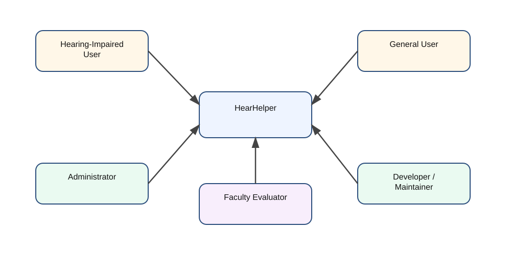
flowchart TD
A[Hearing-Impaired User] --> S[HearHelper]
B[General User] --> S
C[Administrator] --> S
D[Developer / Maintainer] --> S
E[Faculty Evaluator] --> S
Figure 3.1 - Stakeholder View of the System
| ID | Requirement | Description |
|---|---|---|
| FR1 | Registration | The system shall allow users to create accounts using email and password. |
| FR2 | Login | The system shall authenticate registered users through Firebase Authentication. |
| FR3 | Home Dashboard | The system shall provide a central dashboard after successful login. |
| FR4 | Live Transcription | The system shall convert speech to text in real time. |
| FR5 | Transcript Management | The system shall support transcript history, clear, copy, download, and speech playback. |
| FR6 | Community Chat | The system shall allow registered users to exchange messages. |
| FR7 | Quick Phrase Support | The system shall provide quick accessibility-friendly phrases in chat. |
| FR8 | Sign Language Assistance | The system shall provide webcam-based sign support and sentence formation. |
| FR9 | Benefits Portal | The system shall display categorized support information. |
| FR10 | Settings | The system shall allow display, audio, language, and profile customization. |
| FR11 | Feedback | The system shall collect feedback from users. |
| FR12 | Admin Dashboard | The system shall allow an authorized admin to review users and feedback. |
Table 3.1 - Functional Requirements
| ID | Requirement | Description |
|---|---|---|
| NFR1 | Usability | The system should remain easy to use and visually understandable. |
| NFR2 | Accessibility | Controls, font sizes, and workflow should be friendly for accessibility needs. |
| NFR3 | Responsiveness | The UI should adapt to multiple screen sizes. |
| NFR4 | Performance | User actions such as chat and transcription should feel responsive. |
| NFR5 | Reliability | Core workflows should operate predictably in normal browser conditions. |
| NFR6 | Maintainability | Source code should remain modular and page-oriented. |
| NFR7 | Scalability | Cloud-backed modules should support additional users and data. |
| NFR8 | Portability | The solution should run on standard browsers. |
| NFR9 | Extensibility | The system should support future AI and security enhancements. |
Table 3.2 - Non-Functional Requirements
| Role | Description | Privileges |
|---|---|---|
| Visitor | Unauthenticated user | Access public landing and auth pages |
| User | Registered and logged-in user | Access dashboard, transcription, community, benefits, settings, sign-language module |
| Admin | Authorized user with admin session | Access admin dashboard, user list, feedback list, analytics |
Table 3.4 - User Roles and Responsibilities
| Category | Requirement |
|---|---|
| Processor | Dual-core or above |
| RAM | 4 GB or above recommended |
| Browser | Modern Chrome, Edge, Firefox, or equivalent |
| Internet | Required for Firebase and external dependencies |
| Optional Devices | Microphone, webcam, speakers/headphones |
| Front End | HTML5, CSS3, JavaScript |
| Cloud Stack | Firebase Authentication, Cloud Firestore, Firebase Hosting |
| AI Stack | MediaPipe, Python, TensorFlow, Flask-SocketIO |
Table 3.3 - Hardware and Software Requirements
The system accepts several forms of input:
The major system outputs are:
The current repository uses the following main data structures:
users collection in Firestore,messages collection in Firestore,feedback collection in Firestore,The following constraints affect the current project:
Assumptions include the availability of a modern browser, correct Firebase configuration, and access to microphone or webcam where needed.
This chapter defined the functional scope and quality requirements of HearHelper. These requirements directly inform the system design described in the next chapter.
This chapter describes how HearHelper is designed as a modular web platform. The design balances user-facing simplicity with technical flexibility. It also separates essential functionality from optional experimental components so that the core system remains usable even when the AI backend is not active.
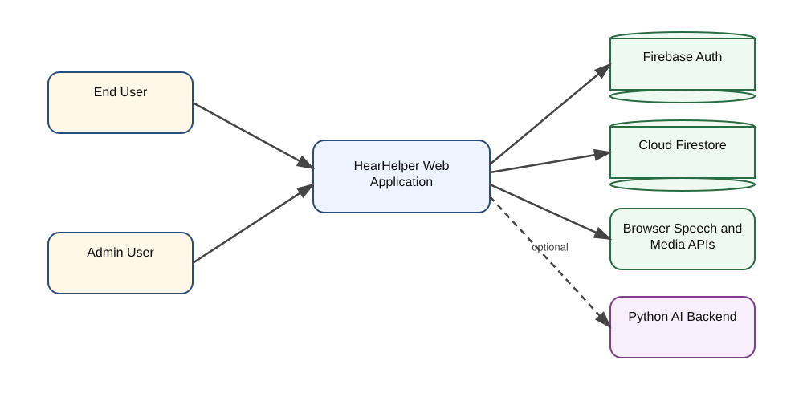
flowchart TD
U[End User] --> W[HearHelper Web Application]
A[Admin User] --> W
W --> FA[Firebase Authentication]
W --> FS[Cloud Firestore]
W --> BA[Browser Speech and Media APIs]
W --> MP[MediaPipe Browser Recognition]
W -. optional .-> PY[Python AI Backend]
Figure 4.1 - System Context Diagram
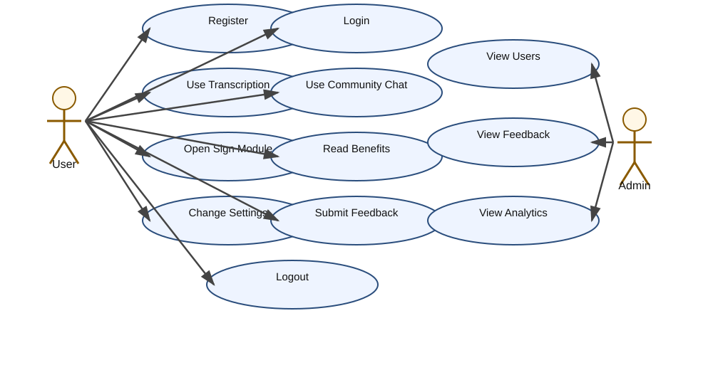
flowchart LR
User((User))
Admin((Admin))
U1[Register]
U2[Login]
U3[Use Transcription]
U4[Use Community Chat]
U5[Open Sign Module]
U6[Read Benefits]
U7[Change Settings]
U8[Submit Feedback]
U9[Logout]
A1[View Users]
A2[View Feedback]
A3[View Analytics]
User --> U1
User --> U2
User --> U3
User --> U4
User --> U5
User --> U6
User --> U7
User --> U8
User --> U9
Admin --> U2
Admin --> A1
Admin --> A2
Admin --> A3
Figure 4.2 - Use Case Diagram
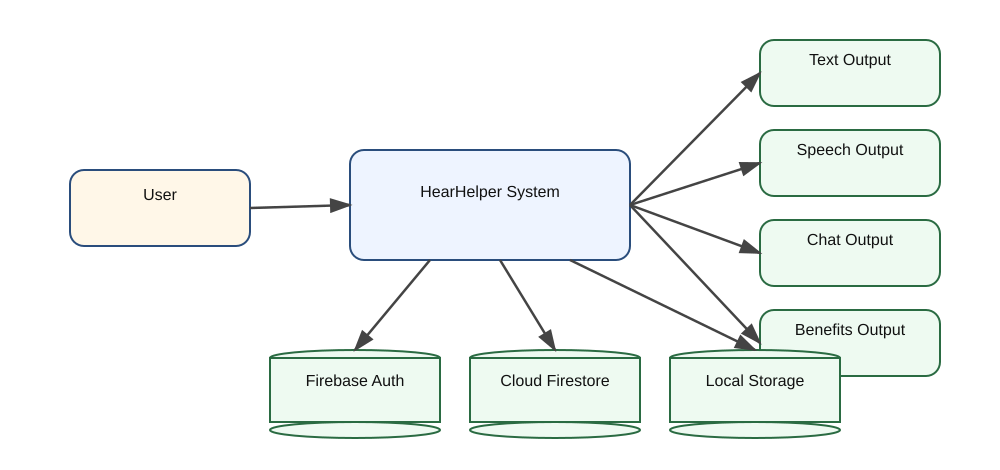
flowchart TD
User[User] --> System[HearHelper System]
System --> O1[Text Output]
System --> O2[Speech Output]
System --> O3[Chat Output]
System --> O4[Benefits Output]
System --> DS1[(Firebase Auth)]
System --> DS2[(Cloud Firestore)]
System --> DS3[(Local Storage)]
Figure 4.3 - DFD Level 0
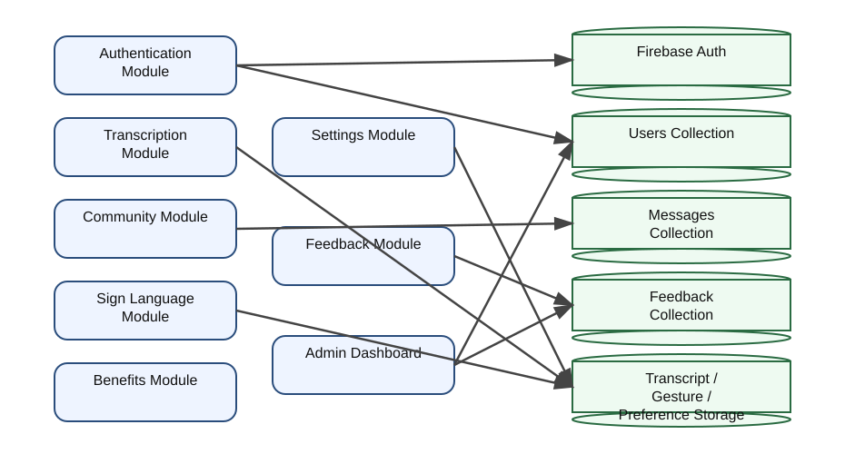
flowchart TD
U[User] --> M1[Authentication Module]
U --> M2[Transcription Module]
U --> M3[Community Module]
U --> M4[Sign Language Module]
U --> M5[Benefits Module]
U --> M6[Settings Module]
U --> M7[Feedback Module]
M1 --> A[(Firebase Auth)]
M1 --> UDB[(Users Collection)]
M3 --> MDB[(Messages Collection)]
M7 --> FDB[(Feedback Collection)]
M2 --> LS1[(Transcript History)]
M4 --> LS2[(Gesture History)]
M6 --> LS3[(Preference Storage)]
Admin[Admin] --> M8[Admin Dashboard]
M8 --> UDB
M8 --> FDB
Figure 4.4 - DFD Level 1
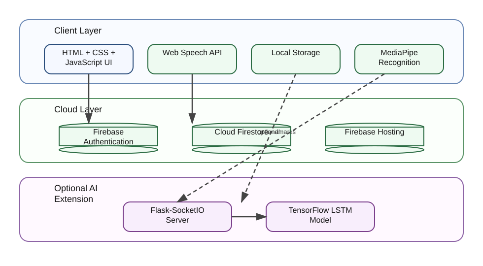
flowchart TB
subgraph Client
UI[HTML + CSS + JavaScript UI]
Speech[Web Speech API]
Local[Local Storage]
Vision[MediaPipe Recognition]
end
subgraph Cloud
Auth[Firebase Authentication]
Firestore[Cloud Firestore]
Hosting[Firebase Hosting]
end
subgraph Optional AI Extension
Socket[Flask-SocketIO Server]
Model[TensorFlow LSTM Model]
end
UI --> Speech
UI --> Local
UI --> Vision
UI --> Auth
UI --> Firestore
Hosting --> UI
Vision -. optional landmark stream .-> Socket
Socket --> Model
Figure 4.5 - High-Level Architecture Diagram
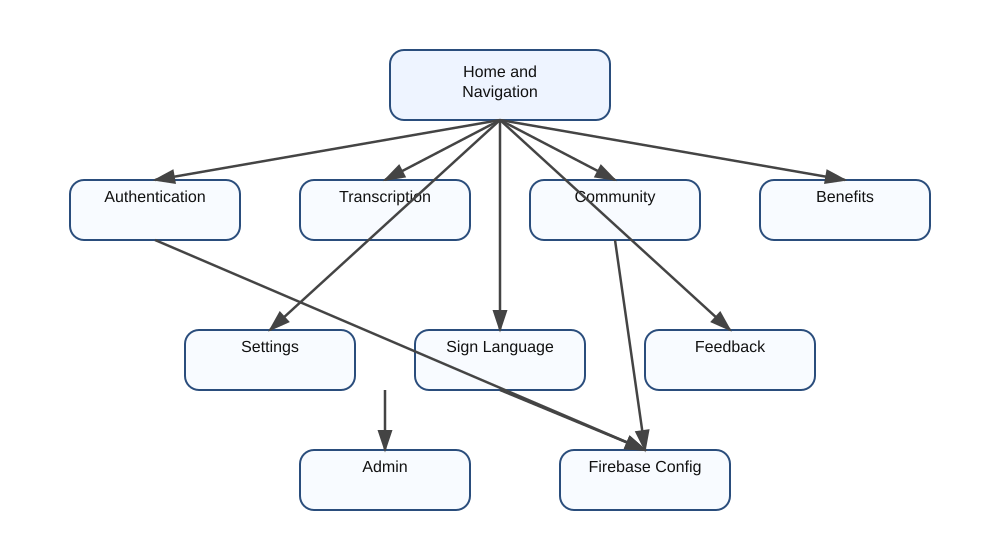
flowchart LR
C1[Home and Navigation]
C2[Authentication]
C3[Transcription]
C4[Community]
C5[Benefits]
C6[Settings]
C7[Sign Language]
C8[Feedback]
C9[Admin]
C10[Firebase Config]
C1 --> C2
C1 --> C3
C1 --> C4
C1 --> C5
C1 --> C6
C1 --> C7
C8 --> C10
C9 --> C10
C4 --> C10
C2 --> C10
Figure 4.6 - Component Diagram
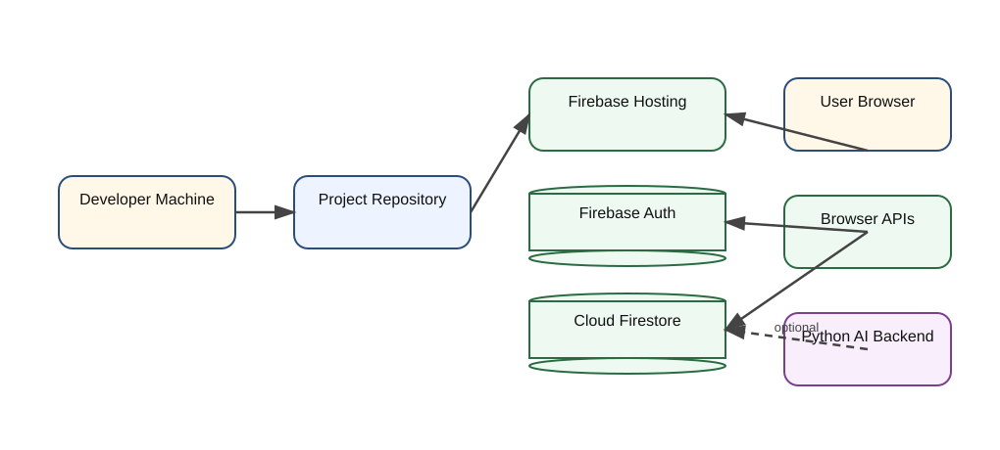
flowchart TD
Dev[Developer Machine] --> Repo[Project Repository]
Repo --> FirebaseHost[Firebase Hosting]
Browser[User Browser] --> FirebaseHost
Browser --> FirebaseAuth[Firebase Authentication]
Browser --> Firestore[Cloud Firestore]
Browser --> APIs[Browser Speech and Media APIs]
Browser -. optional .-> PythonAI[Python AI Backend]
Figure 4.7 - Deployment Diagram
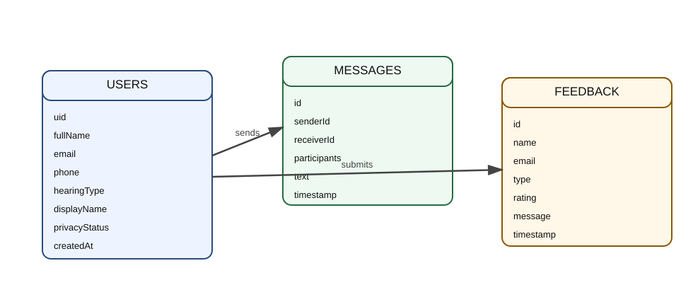
erDiagram
USERS ||--o{ MESSAGES : sends
USERS ||--o{ FEEDBACK : submits
USERS {
string uid
string fullName
string email
string phone
string hearingType
string displayName
string privacyStatus
string createdAt
}
MESSAGES {
string id
string senderId
string receiverId
array participants
string text
timestamp timestamp
}
FEEDBACK {
string id
string name
string email
string type
string rating
string message
string timestamp
}
Figure 4.8 - Firestore ER Diagram
The project uses Firebase Authentication for user identity, which is a strong architectural decision for a student system. However, the present Firestore rules are intentionally open in the repository to simplify project demonstration. From a design perspective, this means the current system is suitable for academic usage but would need stronger authorization rules for production deployment.
Future improvements in the security design should include:
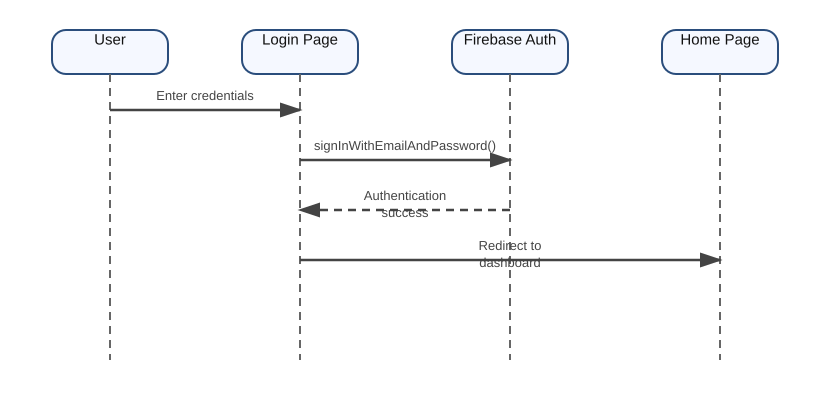
sequenceDiagram
participant U as User
participant L as Login Page
participant F as Firebase Auth
participant H as Home Page
U->>L: Enter credentials
L->>F: signInWithEmailAndPassword()
F-->>L: Authentication success
L-->>H: Redirect to dashboard
Figure 4.9 - Login Sequence Diagram
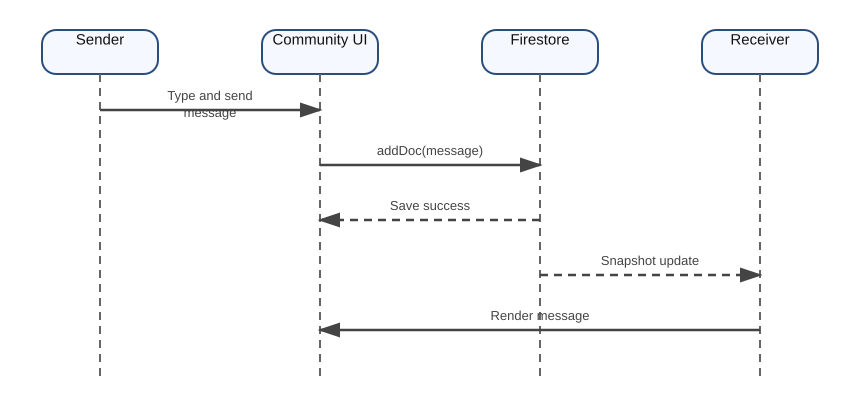
sequenceDiagram
participant Sender
participant UI as Community UI
participant DB as Firestore
participant Receiver
Sender->>UI: Type and send message
UI->>DB: addDoc(message)
DB-->>UI: Save success
DB-->>Receiver: Snapshot update
Receiver->>UI: Render message
Figure 4.10 - Community Messaging Sequence Diagram
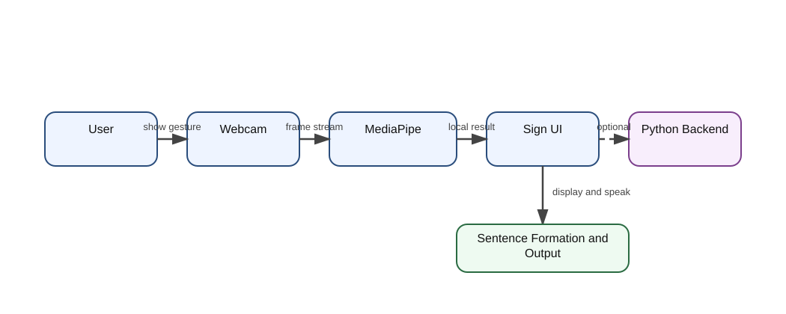
sequenceDiagram
participant User
participant Webcam
participant MP as MediaPipe
participant UI as Sign UI
participant PY as Python Backend
User->>Webcam: Show gesture
Webcam->>MP: Frame stream
MP->>UI: Local gesture result
UI->>UI: Stability check and sentence formation
UI-->>User: Display / speak result
UI-->>PY: Optional landmark stream
PY-->>UI: Optional predicted gesture
Figure 4.11 - Sign Language Recognition Flow
The design of HearHelper has several strengths:
This chapter transformed requirements into system structure through diagrams and design explanations. It explained how the current project uses browser APIs, Firebase services, local storage, and optional AI extensions in a modular arrangement.
This chapter explains how the current HearHelper project is implemented in the repository. The report is based on the current source code and reflects the actual modular arrangement of the project after recent changes. The application primarily resides under the public directory and is supported by additional AI prototype folders inside AI Project.
The implementation strategy is intentionally modular. Each major page has its own HTML file, often a dedicated CSS file, and a JavaScript file focused on page-specific behavior. Shared concerns such as authentication, Firebase configuration, navigation, and lightweight storage are separated into reusable scripts.
| Module | Main Files |
|---|---|
| Home / Dashboard | public/home.html, public/css/index.css, public/js/navigation.js, public/js/app.js |
| Authentication | public/pages/login.html, public/pages/register.html, public/pages/forgot-password.html, public/js/login.js, public/js/register.js, public/js/forgot-password.js, public/js/auth.js |
| Live Transcription | public/pages/transcription.html, public/css/transcription.css, public/js/speech.js, inline page logic |
| Community Chat | public/pages/community.html, public/css/community_connect.css, public/js/community_connect.js |
| Benefits Portal | public/pages/benefits.html, public/css/benefits.css, public/js/benefits.js |
| Settings | public/pages/settings.html, public/css/settings.css, public/js/storage.js |
| Sign Language | public/pages/sign_language.html, public/css/sign_language.css, public/js/sign_language_ai.js |
| Feedback | public/js/app.js, Firestore feedback collection |
| Admin Dashboard | public/pages/admin.html, public/css/admin.css, public/js/admin.js |
| Firebase Layer | public/js/firebase-config.js, firebase.json, firestore.rules |
| AI Prototype Backend | AI Project/Python_Backend/app.py, train_model.py, collect_data.py |
Table 5.1 - Module-to-File Mapping
The home page acts as the central dashboard of the system. It presents HearHelper as an integrated accessibility platform and exposes the major modules through cards and clear call-to-action buttons. The home page is implemented in public/home.html and styled through index.css, responsive.css, and related CSS files.
The dashboard serves multiple purposes:
The navigation logic is handled by public/js/navigation.js, which manages mobile menu toggling, active link updates, and simple page transitions. This shared navigation script helps preserve consistency across the major pages.
The authentication module is one of the most important parts of the current system because most application features are intended for registered users. The project uses Firebase Authentication rather than a custom password storage model. This improves reliability, reduces implementation risk, and aligns the project with modern identity management practices.
The registration workflow is implemented through:
public/pages/register.htmlpublic/js/register.jsThe registration form collects:
The registration script validates password length, password confirmation, and user consent before calling createUserWithEmailAndPassword(). After authentication succeeds, the script stores additional profile information in the Firestore users collection using the Firebase UID as the document key.
This design is academically meaningful because it separates identity from application profile data in a clean and scalable way.
The login workflow is handled through:
public/pages/login.htmlpublic/js/login.jsThe login module supports both user access and authorized admin access. During the recent cleanup of the project, the insecure hardcoded admin password flow was replaced with a Firebase-backed admin login model restricted through an allowed admin email check and an admin session flag. This makes the current project more consistent with sound software design practice.
The forgot password flow is implemented through:
public/pages/forgot-password.htmlpublic/js/forgot-password.jsThe system verifies whether the email exists in Firebase sign-in methods and then sends a password reset email. This improves user recovery without needing custom mail logic for authentication.
The shared public/js/auth.js file listens to authentication state changes through onAuthStateChanged. It updates page access, controls redirection, adjusts the navigation bar for logged-in users, and exposes a common logoutUser() function for safe logout behavior across pages. This module is crucial because it maintains session-aware navigation throughout the application.
The live transcription feature is one of the most visible assistive capabilities in the current project. It is implemented in:
public/pages/transcription.htmlpublic/css/transcription.csspublic/js/speech.jsThe page also contains inline logic for recognition state handling, history management, clipboard copying, downloading, and speech playback of transcript output.
The transcription module uses window.SpeechRecognition or window.webkitSpeechRecognition depending on browser support. When the user starts listening:
This module illustrates how browser APIs can provide real-time assistive utility without building a dedicated speech backend.
The page uses:
These interface choices are important because the goal of assistive software is not only to generate output, but to make that output usable and manageable in context.
The community module is implemented through:
public/pages/community.htmlpublic/css/community_connect.csspublic/js/community_connect.jsThis module provides user-to-user chat for registered users. It adds a social communication layer to HearHelper and distinguishes the project from a purely one-way assistive utility.
The chat system uses the Firestore messages collection. Each message stores:
The participant array is useful because it allows easy querying for all chats involving the current user.
The current community page includes:
users,onSnapshot,The quick phrase feature is especially appropriate for the project domain because it reduces typing effort and supports fast communication in common situations.
The script avoids a more complex Firestore indexing approach by performing some sorting locally after retrieving relevant messages. This is a practical student-project choice that keeps configuration simpler while still delivering the required functionality.
The benefits module is implemented in:
public/pages/benefits.htmlpublic/css/benefits.csspublic/js/benefits.jsThis module is important because accessibility is not only about direct communication tools. Many users also need awareness of available support schemes, concessions, scholarships, and government programs. The project therefore includes a structured information module focused on benefits relevant to hearing-impaired users in India.
The benefits page contains categorized static information cards. These cover areas such as:
The filtering behavior is handled by benefits.js. During the recent cleanup of the project, the filtering logic was corrected so that it no longer depends on an invalid raw event object during initial page load. The improved implementation supports proper button activation and initial rendering.
This module adds strong social value to the project because it connects immediate communication support with longer-term informational empowerment.
The settings module is implemented in:
public/pages/settings.htmlpublic/css/settings.csspublic/js/storage.jsThe settings page is significant because accessibility is not a one-size-fits-all problem. Different users may prefer larger text, different speech rates, different voices, or updated profile information.
The settings module supports:
The storage.js file acts as a lightweight client-side persistence layer. It stores:
This is an appropriate design choice for personalization data that does not always require cloud-level persistence.
The sign-language module is one of the most distinctive parts of the project. It is implemented through:
public/pages/sign_language.htmlpublic/css/sign_language.csspublic/js/sign_language_ai.jsThis module combines educational and interactive functionality. It is not limited to showing reference material; it also attempts recognition through webcam input.
The module uses @mediapipe/tasks-vision and dynamically loads a gesture recognizer model. The browser-side recognition pipeline:
This stability logic is especially useful because gesture recognition can produce repeated or noisy outputs if a sign is held for multiple frames.
The current sign module allows recognized phrases to be accumulated into a sentence. The user can:
This transforms the module from a novelty demo into a small communication aid.
The repository also contains:
AI Project/Python_Backend/app.pycollect_data.pytrain_model.pyThe backend expects landmark coordinate sequences and uses an LSTM-based model trained on a small set of actions such as Thanks, Mother, Looking, Yes, No, and Love. The front-end sign module can stream flattened landmarks to the backend through Socket.IO when the backend is available. This design makes the AI extension optional rather than mandatory.
The project includes a help and feedback flow accessible from the main interface. The logic is handled mainly in public/js/app.js, which:
The feedback structure includes:
This module strengthens the project by supporting user response collection, which is useful both practically and academically.
The admin module is implemented through:
public/pages/admin.htmlpublic/css/admin.csspublic/js/admin.jsThe admin dashboard reads Firestore data and displays:
The admin dashboard uses Firestore snapshot listeners to retrieve users and feedback collections. It then updates statistics and charts dynamically. During the recent cleanup, admin protection was improved so that the page checks authenticated admin status before allowing access.
This module increases the academic depth of the project because it demonstrates not only user-facing design but also basic monitoring, analytics, and administration.
The application uses Firebase for authentication, Firestore, and hosting. The relevant files are:
public/js/firebase-config.jsfirebase.jsonfirestore.rulesThe Firebase configuration initializes:
initializeApp()getAuth()getFirestore()The hosting configuration points to the public directory, which is appropriate for a static web application. Firestore rules are currently open for demonstration, which should be mentioned honestly in the project report as a development convenience rather than a final production practice.
The repository includes public/js/servers.js, which contains an Express-based backend prototype. It includes API ideas for transcripts and other service endpoints. However, the current deployed flow of the project mainly depends on Firebase and browser APIs. For report clarity, this file should be treated as an auxiliary prototype component rather than a core deployed dependency.
users and feedback.This chapter explained how each current module of HearHelper is implemented in the repository. The implementation reflects a practical blend of front-end development, Firebase integration, browser-native accessibility features, and exploratory AI components.
Testing is essential for validating whether a software system behaves according to its requirements. For HearHelper, testing was particularly important because the project combines UI behavior, authentication, cloud data, real-time messaging, browser speech services, accessibility settings, and experimental sign-language recognition. Different modules depend on different runtime conditions, so the testing strategy had to include both logic-level verification and user-facing workflow validation.
The following testing approaches were considered:
The testing emphasis in this academic project was on practical user workflows rather than automated test suites, because several modules depend on browser APIs and interactive runtime behavior.
| Parameter | Value |
|---|---|
| OS Used During Development | Windows |
| Front-End Runtime | Modern browser environment |
| Cloud Backend | Firebase Authentication + Cloud Firestore |
| Hosting Configuration | Firebase Hosting |
| AI Runtime | MediaPipe in browser, optional Python backend |
| Input Devices | Keyboard, mouse, microphone, webcam |
| Connectivity | Internet required for Firebase-backed modules |
Table 6.1 - Test Environment
| TC ID | Module | Test Description | Expected Result | Status |
|---|---|---|---|---|
| TC01 | Registration | Enter valid registration details | Account should be created and user profile stored in Firestore | Pass |
| TC02 | Registration | Enter mismatched passwords | User should receive validation error | Pass |
| TC03 | Registration | Submit without accepting terms | User should receive validation error | Pass |
| TC04 | Login | Enter valid user credentials | User should be redirected to dashboard | Pass |
| TC05 | Login | Enter invalid credentials | User should receive login error | Pass |
| TC06 | Forgot Password | Enter registered email | Reset link should be sent | Pass |
| TC07 | Navigation | Open dashboard and select modules | User should move correctly between pages | Pass |
| TC08 | Transcription | Start microphone and speak | Text should appear in real time | Pass with browser support |
| TC09 | Transcription | Change recognition language | Recognition language should update | Pass |
| TC10 | Transcription | Copy transcript | Text should copy to clipboard | Pass |
| TC11 | Transcription | Download transcript | Text file should be generated | Pass |
| TC12 | Community | Load contact list | Users collection should populate contacts | Pass |
| TC13 | Community | Send a message | Message should be saved and rendered | Pass |
| TC14 | Community | Search contact | Matching contacts should be filtered | Pass |
| TC15 | Community | Update profile name/status | Firestore user document should update | Pass |
| TC16 | Benefits | Filter by category | Relevant cards should remain visible | Pass |
| TC17 | Settings | Change font and save | Setting should persist locally | Pass |
| TC18 | Settings | Change speech settings | Updated values should remain available for playback | Pass |
| TC19 | Feedback | Submit feedback form | Feedback document should be added to Firestore | Pass |
| TC20 | Admin | Open admin dashboard with authorized admin | Dashboard should render user and feedback data | Pass |
| TC21 | Admin | Attempt admin access without authorization | User should be redirected away | Pass |
| TC22 | Sign Language | Enable webcam | Camera stream should start if permission is granted | Pass |
| TC23 | Sign Language | Recognize stable gesture | Phrase should appear and sentence should update | Pass |
| TC24 | Sign Language | Save recognized sentence | Sentence should be stored in local history | Pass |
| TC25 | Logout | Click logout | Session should end and user should be redirected | Pass |
Table 6.2 - Functional Test Cases
| TC ID | Area | Check | Expected Result | Status |
|---|---|---|---|---|
| U01 | Readability | Increase font size in settings | Text should become more readable | Pass |
| U02 | Navigation | Use main menu and cards | Movement should remain simple and visible | Pass |
| U03 | Chat | Use quick phrase buttons | Short accessible phrases should send correctly | Pass |
| U04 | Sign Module | Observe live visual feedback | User should clearly see current recognition status | Pass |
| U05 | Help / Feedback | Open help and feedback modals | Modals should open and close correctly | Pass |
| U06 | Responsive Layout | Open on narrow screen width | Layout should adapt without complete breakage | Pass with minor visual variation |
| U07 | Settings | Reset and save controls | Buttons should remain understandable | Pass |
| U08 | Benefits | Read scheme cards | Structured card design should improve scanability | Pass |
Table 6.3 - Usability and Accessibility Test Cases
During the recent project cleanup before preparing this report, several consistency issues were identified and corrected so that the report could align with the actual working project.
| Defect ID | Issue | Action Taken | Result |
|---|---|---|---|
| D01 | Some pages referred to missing stylesheet names | Corrected invalid stylesheet references | Resolved |
| D02 | Some pages loaded authentication logic incorrectly | Updated script loading to module-based auth flow | Resolved |
| D03 | Dead navigation links pointed to a removed module | Removed or redirected broken links | Resolved |
| D04 | Benefits filtering depended on invalid event usage | Updated filtering logic for reliable initial load | Resolved |
| D05 | Sign-language status badge had an ID mismatch | Updated logic to match current page element | Resolved |
| D06 | Admin login used insecure hardcoded credentials | Reworked to authenticated admin-email-based access | Resolved |
| D07 | Admin route protection was weak | Added access checking before admin dashboard usage | Resolved |
Table 6.4 - Defects Observed and Resolved
The authentication module performs reliably for registration, login, and password reset under normal Firebase availability. It demonstrates a correct separation between identity management and user profile storage. This is an important design strength of the project.
The transcription module provides fast and readable output when browser speech recognition is supported and microphone permissions are granted. Recognition quality depends on accent, surrounding noise, and browser implementation, but the module succeeds in demonstrating real-time communication assistance effectively.
The community module successfully provides real-time messaging using Firestore snapshot listeners. Contact filtering, message rendering, and quick phrase support all contribute to a coherent communication workflow. Because the chat uses cloud-backed storage, it also demonstrates practical multi-user state handling within a student project.
The benefits module performs well as an informational support layer. Although its data is currently static and manually curated inside the page structure, it adds meaningful contextual value and broadens the scope of the project beyond direct communication tools.
The settings module improves user comfort and accessibility by giving control over font and audio parameters. The use of local storage is suitable for this purpose and avoids unnecessary cloud complexity.
The sign-language module demonstrates a strong conceptual extension of the project. The browser-side MediaPipe integration provides immediate visual and interactive feedback. The optional Python backend shows how the project can move toward more advanced sequence-based recognition. The current gesture vocabulary remains limited, but the module is academically rich and technically meaningful.
The admin dashboard successfully reads and summarizes user and feedback data from Firestore. This strengthens the overall project by demonstrating monitoring, dashboard design, and role-aware usage.
Performance observations made during manual testing include:
The project uses managed authentication, which is a major strength. However, the current repository uses open Firestore rules for ease of demo. For academic honesty, it is important to note that this is a development convenience and not a production best practice. In a future production version, stronger access control would be mandatory.
The key limitations observed are:
From a project evaluation perspective, HearHelper succeeds because it demonstrates meaningful integration. Many student projects implement one isolated feature well. HearHelper goes further by connecting identity, cloud data, accessibility settings, communication, information support, and AI-assisted interaction in a single coherent application. The result is not just a collection of pages but a platform-like system.
The testing results show that the core user workflows are functional and logically connected. The most stable and mature modules are authentication, dashboard, benefits, settings, community chat, feedback, and admin analytics. The most experimental area remains the sign-language AI integration, which is acceptable and even desirable in a final year project because it shows advanced scope and future research direction.
This chapter showed that the current HearHelper project is functionally viable, educationally strong, and socially relevant. It also documented the known constraints and the project cleanup steps that improved consistency before final documentation.
In addition to design and implementation, a complete project report must explain how the work was planned, how it can be deployed, and how it can be maintained. This chapter documents the broader engineering perspective of HearHelper.
The project can be understood as progressing through the following phases:
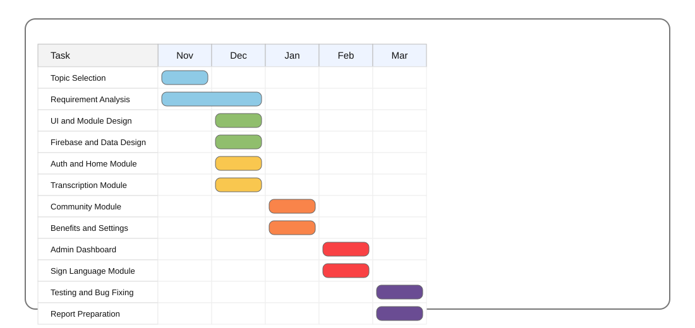
gantt
title HearHelper Project Schedule
dateFormat YYYY-MM-DD
section Planning
Topic Selection :done, a1, 2025-11-01, 7d
Requirement Analysis :done, a2, 2025-11-08, 10d
section Design
UI and Module Design :done, b1, 2025-11-18, 14d
Firebase and Data Design :done, b2, 2025-11-25, 10d
section Development
Auth and Home Module :done, c1, 2025-12-05, 12d
Transcription Module :done, c2, 2025-12-12, 10d
Community Module :done, c3, 2025-12-22, 14d
Benefits and Settings :done, c4, 2026-01-05, 15d
Admin Dashboard :done, c5, 2026-01-20, 12d
Sign Language Module :done, c6, 2026-02-01, 20d
section Review
Testing and Bug Fixing :done, d1, 2026-02-21, 18d
Report Preparation :active, d2, 2026-03-11, 25d
Figure 7.1 - Development Gantt Chart
The deployed web application uses Firebase Hosting with the public folder as the hosting root, as specified in firebase.json. The deployment process can be summarized as follows:
public folder with the latest HTML, CSS, and JavaScript files,The sign-language Python backend is not mandatory for the hosted application and may be treated as an optional local experimental service.
Future maintenance of the system should focus on:
The current modular file structure helps maintainability because each page has clear implementation boundaries.
| Risk ID | Risk | Likelihood | Impact | Mitigation |
|---|---|---|---|---|
| R1 | Browser API incompatibility | Medium | Medium | Provide browser guidance and fallback messaging |
| R2 | Firebase misconfiguration | Medium | High | Validate config and rules before deployment |
| R3 | Weak production security rules | High | High | Implement stricter access rules in future |
| R4 | Sign-language model limitation | High | Medium | Expand dataset and retrain model |
| R5 | Content becoming outdated | Medium | Medium | Review benefits and support information regularly |
| R6 | User permission denial for mic/camera | Medium | Medium | Provide guidance and permission prompts |
Table 7.1 - Risk Register
The following maintenance strategy is suitable for future versions of HearHelper:
This chapter described how the project evolved over time, how it can be deployed, and what maintenance risks and strategies are relevant for its future growth.
HearHelper was developed as an assistive communication web platform aimed at supporting hearing-impaired users through a combination of live transcription, messaging, sign-language assistance, personalization, benefits information, feedback capture, and administrative review. The current project demonstrates that accessibility-oriented software can be both technically meaningful and socially valuable within the scope of a BCA final year project.
One of the major strengths of HearHelper is its integrated nature. Many available tools focus on only one task, such as speech-to-text conversion or sign-language learning. HearHelper instead combines multiple related needs into a single web application. This is important because real-world users do not experience communication in isolated fragments. A user may need transcription in one moment, chat in another, sign reference later, and settings personalization throughout. By recognizing that communication support is a system-level need rather than a single feature, the project achieves greater relevance.
The technical choices made in the project also support its practical value. Firebase Authentication and Firestore provide a simple but modern cloud backbone. Browser speech APIs reduce backend dependency for real-time speech tasks. Local storage supports personalization. MediaPipe and the optional Python AI backend demonstrate a path toward more advanced gesture recognition. The resulting architecture is lightweight, understandable, extensible, and appropriate for demonstration and academic evaluation.
From a usability perspective, the project places visible emphasis on interface clarity. The home dashboard organizes features cleanly. The transcription interface is direct and utility-focused. The chat interface includes quick phrases that are especially suitable for accessibility use. The settings module acknowledges that different users have different communication preferences. The benefits page extends the project beyond communication mechanics into informational empowerment. The admin module adds monitoring capability, which strengthens the completeness of the system.
At the same time, the project remains honest about its limitations. The current system still depends on browser support, cloud connectivity, and development-stage Firestore rules. The sign-language AI component is promising but limited in vocabulary and maturity. These limitations do not weaken the academic value of the project; rather, they clarify the difference between a strong functional prototype and a full-scale production system.
Overall, HearHelper succeeds in meeting its major objectives. It proves that a modular web application can support communication accessibility meaningfully. It demonstrates the integration of front-end development, cloud services, accessibility principles, and exploratory AI. Most importantly, it shows how software engineering can be directed toward inclusion and social usefulness.
The current version of HearHelper has the following limitations:
These limitations identify a clear set of future improvement opportunities.
The future scope of HearHelper is significant. The platform can evolve in several directions:
A major outcome of this project is the recognition that accessibility software is not a luxury feature. It is a means of participation. When software helps a user understand speech, communicate independently, or find support resources, it contributes directly to social inclusion. HearHelper therefore represents a meaningful example of how student projects can move beyond routine management systems and instead address real user needs with empathy and technical rigor.
This appendix explains how an end user can operate the current HearHelper system. It is useful both for project demonstration and for inclusion in the final academic report. The instructions below assume that the application has been deployed correctly and that Firebase services are configured.
When the application opens, the user first sees the public entry or authenticated home flow depending on session state. The home dashboard presents feature cards that act as the primary navigation model of the application. The user should:
The dashboard is designed to act as a clear orientation layer rather than a dense portal. This improves usability for first-time users.
To create a new account:
If the registration is valid, Firebase creates the account and Firestore stores the profile document.
To log in:
If the credentials are invalid, the system displays an appropriate alert. If the account is not authorized for admin access, the admin route is denied.
If the user forgets the password:
To use the live transcription module:
Start Listening,Copy Text, Download, Speak, or Clear as needed,This module is especially useful when the user wants quick conversational understanding without typing.
To use the community module:
The profile settings icon allows the user to set an appearance name and status for use inside the community list.
To use the benefits page:
This module is meant for informational support and awareness rather than direct service automation.
To use the settings page:
The settings module allows the application experience to adapt to user comfort and readability.
To use the sign-language page:
Enable AI Camera,Speak, Save, or Clear as needed,If the optional Python backend is running, the module may also use backend predictions.
To send feedback:
For an authorized admin:
| Screen | Main Purpose | Key Actions |
|---|---|---|
| Login | User authentication | Sign in, choose user/admin mode |
| Register | New account creation | Enter details and create account |
| Forgot Password | Account recovery | Send reset link |
| Home | Central dashboard | Navigate to modules |
| Transcription | Real-time speech-to-text | Start listening, copy, download, speak |
| Community | User chat | Select contact, send message |
| Benefits | Informational support | Filter and read scheme details |
| Settings | Personalization | Save font, audio, and profile changes |
| Sign Language | Gesture assistance | Start camera, read output, form sentence |
| Admin | Monitoring | Review users, feedback, charts |
Table A.1 - Screen-Wise User Manual Summary
| Collection | Purpose | Key Fields |
|---|---|---|
users | User profile storage | fullName, email, phone, hearingType, displayName, privacyStatus, createdAt |
messages | Real-time chat storage | text, senderId, receiverId, participants, timestamp |
feedback | Help and support feedback | name, email, type, rating, message, timestamp |
Table B.1 - Firestore Collection Structure
{
"fullName": "Ganesh",
"email": "ganesh@example.com",
"phone": "9876543210",
"hearingType": "Hard of Hearing",
"displayName": "Ganesh G",
"privacyStatus": "Available",
"createdAt": "2026-03-15T10:00:00.000Z"
}
{
"text": "Hello, can you repeat that?",
"senderId": "uid_001",
"receiverId": "uid_002",
"participants": ["uid_001", "uid_002"],
"timestamp": "serverTimestamp"
}
{
"name": "Puneeth",
"email": "puneeth@example.com",
"type": "improvement",
"rating": "5",
"message": "The transcription module is very helpful.",
"timestamp": "2026-04-01T12:30:00.000Z"
}
The project also uses local storage for:
This is suitable for personalized lightweight data that does not always need cloud synchronization.
Original Project 1/ ├── public/ │ ├── home.html │ ├── index.html │ ├── css/ │ ├── js/ │ └── pages/ ├── AI Project/ │ ├── Python_Backend/ │ └── Sign_Language_Translator/ ├── firebase.json ├── firestore.rules └── HearHelper_Bangalore_University_Project_Report.md
public/home.htmlActs as the central dashboard for authenticated users and presents the primary modules of the system.
public/js/auth.jsMaintains authentication state, updates navigation for logged-in users, and controls logout behavior.
public/js/firebase-config.jsInitializes Firebase app, authentication, and Firestore configuration.
public/pages/transcription.htmlContains the real-time transcription UI and page-level speech-recognition management.
public/js/community_connect.jsImplements user list loading, message sending, message subscription, and profile modal updates.
public/js/benefits.jsImplements benefits-category filtering behavior for the information portal.
public/js/storage.jsMaintains local settings and lightweight user data in browser storage.
public/js/sign_language_ai.jsImplements webcam-based gesture recognition, sentence formation, history storage, and optional backend streaming.
public/js/admin.jsImplements admin dashboard behavior, Firestore snapshot listeners, counts, rendering, and route protection.
AI Project/Python_Backend/app.pyProvides an optional real-time Flask-SocketIO backend for sign-language model inference.
AI Project/Python_Backend/collect_data.pyCaptures landmark datasets for sign-language model training.
AI Project/Python_Backend/train_model.pyBuilds and trains the LSTM-based gesture-recognition model.
| Test ID | Scenario | Input | Expected Result |
|---|---|---|---|
| AUTH01 | Valid registration | Correct form values | User created successfully |
| AUTH02 | Duplicate registration | Existing email | Error shown |
| AUTH03 | Weak password | Short password | Validation error |
| AUTH04 | Mismatched password | Different password values | Validation error |
| AUTH05 | Valid login | Correct credentials | Redirect to dashboard |
| AUTH06 | Invalid login | Wrong password | Error message |
| AUTH07 | Admin login authorized | Allowed admin email and correct password | Redirect to admin page |
| AUTH08 | Admin login unauthorized | Non-admin email in admin mode | Access denied |
| AUTH09 | Forgot password valid | Registered email | Reset mail sent |
| AUTH10 | Forgot password invalid | Unknown email | Error displayed |
| Test ID | Scenario | Expected Result |
|---|---|---|
| TR01 | Start listening | Mic state and listening badge should activate |
| TR02 | Stop listening | Recognition should stop cleanly |
| TR03 | Speak English | Text should appear |
| TR04 | Change language | Recognition language should update |
| TR05 | Copy text | Clipboard should receive transcript |
| TR06 | Download text | Downloaded file should contain transcript |
| TR07 | Clear transcript | Output should reset |
| TR08 | Speak transcript | TTS should read visible transcript |
| TR09 | Empty transcript download | System should not fail or crash |
| TR10 | Browser without recognition support | Error or unsupported message should appear |
| Test ID | Scenario | Expected Result |
|---|---|---|
| COM01 | Load contacts | Contacts should render from users collection |
| COM02 | Search contacts | Filtered matching contacts should appear |
| COM03 | Select contact | Chat panel should activate |
| COM04 | Send text | Message document should be created |
| COM05 | Press Enter to send | Message should send |
| COM06 | Send quick phrase | Phrase should appear as message |
| COM07 | Update profile modal | User document should update |
| COM08 | Empty message send | No message should be sent |
| COM09 | Real-time update | Incoming message should appear without refresh |
| COM10 | Logout from community page | Session should close successfully |
| Test ID | Scenario | Expected Result |
|---|---|---|
| SG01 | Enable camera | Webcam stream should start |
| SG02 | Disable camera | Webcam stream should stop |
| SG03 | Show supported gesture | UI should display phrase |
| SG04 | Hold stable gesture | Sentence should update only after threshold |
| SG05 | Repeat same gesture continuously | Duplicate word should be reduced |
| SG06 | Speak sentence | TTS should speak formed sentence |
| SG07 | Save sentence | Sentence should enter history |
| SG08 | Clear sentence | Sentence panel should reset |
| SG09 | Clear history | Stored local history should be removed |
| SG10 | Python backend unavailable | Local mode should still function |
| Test ID | Scenario | Expected Result |
|---|---|---|
| GEN01 | Benefits page load | All cards should show initially |
| GEN02 | Filter benefits | Matching cards only should display |
| GEN03 | Change font size | UI readability should improve |
| GEN04 | Change speech rate | TTS should use updated value |
| GEN05 | Reset settings | Defaults should restore |
| GEN06 | Submit feedback | Firestore feedback record should be created |
| GEN07 | Admin open dashboard | Counts and tables should render |
| GEN08 | Admin view users | User list should appear |
| GEN09 | Admin view feedback | Feedback list should appear |
| GEN10 | Unauthorized admin access | Redirect should occur |
START
Load Firebase Authentication
Listen to auth state changes
IF user exists THEN
update navigation
allow protected page access
ELSE
redirect protected pages to login or index
ENDIF
On registration submit:
validate form values
create account in Firebase Auth
store profile data in Firestore users collection
On login submit:
validate credentials
sign in through Firebase Auth
IF admin mode selected AND email authorized THEN
set admin session
redirect admin page
ELSE
redirect home page
ENDIF
END
START
Initialize SpeechRecognition object
Set language, continuous mode, interim results
On start:
show listening state
On result:
separate interim and final transcript
update transcript display
On error:
show error and stop recognition
On stop:
reset mic state
Provide utilities:
copy transcript
download transcript
clear transcript
speak transcript using speech synthesis
END
START
Wait for auth state
IF user logged in THEN
load users from Firestore
show contacts except current user
ENDIF
On contact selection:
set active contact
subscribe to Firestore messages
filter messages by selected participants
sort messages by timestamp
render messages
On send:
IF message text not empty THEN
add message document to Firestore
ENDIF
END
START
Load MediaPipe gesture recognizer
On camera start:
open webcam stream
begin frame loop
For each frame:
run gesture recognition
map result to phrase and emoji
IF gesture stable for threshold frames THEN
add phrase to sentence
ENDIF
IF python backend connected THEN
send landmarks to backend
receive optional model prediction
ENDIF
Allow user to:
speak sentence
save sentence
clear sentence
clear history
END
START
Verify current user is authorized admin
Attach snapshot listeners to users and feedback collections
On collection update:
build arrays for rendering
update dashboard counts
update user and feedback tables
refresh chart values
END
Accessibility: The design of systems so that people with disabilities can use them effectively.
Authentication: The process of verifying the identity of a user.
Authorization: The process of deciding what an authenticated user is allowed to do.
Cloud Firestore: A NoSQL cloud database from Firebase used for storing structured application data.
Firebase Authentication: A managed identity service used for secure user sign-up and sign-in.
Gesture Recognition: The process of identifying hand or body gestures from visual input.
Local Storage: Browser-based persistent key-value storage for client-side data.
MediaPipe: A framework for building perception pipelines such as hand and gesture recognition.
Real-Time Listener: A Firestore mechanism that updates the client when cloud data changes.
Speech Synthesis: The generation of spoken audio from text.
Speech Recognition: The conversion of spoken audio into text.
Web Application: Software accessed through a web browser.
Accessibility design in HearHelper goes beyond simply adding large buttons. The project attempts to support real communication scenarios by combining readable content, user-controlled settings, and response-oriented modules. Practical accessibility in this project includes:
Firebase was selected because it allows the project to focus on application logic rather than server administration. In an academic context, this is especially useful because it:
The AI portion of the project should be interpreted as an exploratory but meaningful extension. It shows how the system can evolve beyond rule-based or static interfaces into recognition-driven accessibility support. Even though the current model is limited, it provides a strong research direction for future work.
HearHelper reduces communication barriers for hearing-impaired users by combining transcription, chat, settings, benefits information, and sign-language assistance in one web platform.
Firebase simplified authentication, cloud storage, and hosting, allowing the project to focus on user-facing accessibility features.
A browser-based system is easier to access across devices, easier to deploy, and more cost-effective for users.
It enables real-time speech recognition and text-to-speech without requiring a separate speech backend.
It stores and retrieves chat messages from Firestore using real-time snapshot listeners.
users, messages, and feedback.
Through a browser-based MediaPipe gesture recognizer and an optional Python backend for model-based prediction.
To keep the main application usable even if the experimental AI service is not running.
Browser dependency, open Firestore rules for demo use, limited sign vocabulary, and internet dependence for cloud modules.
By adding stricter security, larger AI datasets, better multilingual support, cloud-synced preferences, and mobile deployment.
Accessibility support is broader than direct communication; users also need access to useful scheme and support information.
They reduce effort and improve accessibility in repeated communication scenarios.
Incremental prototyping, because modules were built and refined step by step.
It integrates front-end development, cloud services, accessibility design, and AI experimentation in one cohesive final-year project.
Through authenticated access with an authorized admin email and admin session validation.
Before final university submission, the following checklist should be completed:
For a final printed project report, screenshots significantly improve readability and perceived completeness. They also help the evaluator connect the implementation chapter to the actual interface. Since this report is prepared from the current repository and not from a screenshot bundle, this appendix provides a list of recommended screenshots and suggested captions that can be inserted before final printing.
Suggested Caption: Login interface showing user and admin mode selection, email/password input, and validation-friendly layout.
What to capture: Full login form with toggle visible and clean background.
Suggested Caption: Registration form for new HearHelper users with full name, email, phone, hearing type, and password validation controls.
What to capture: Entire form including password strength bar.
Suggested Caption: Home dashboard displaying core HearHelper modules such as live transcription, community connect, sign language, benefits, and settings.
What to capture: Dashboard cards and hero section.
Suggested Caption: Real-time transcription interface showing language selection, mic controls, status badge, final transcript, and history panel.
What to capture: One screenshot while listening and one after transcript generation.
Suggested Caption: Community chat page with contact list, active conversation panel, quick response phrases, and profile settings option.
What to capture: Chat interface with at least one message thread.
Suggested Caption: Benefits portal displaying categorized accessibility support information for users.
What to capture: Filter buttons and multiple benefit cards visible.
Suggested Caption: Personalization page showing font, audio, and profile preferences for the current user.
What to capture: Display and audio tabs with controls.
Suggested Caption: Sign-language assistance page with webcam panel, live gesture result, sentence formation area, and history section.
What to capture: Visible recognition result and current sentence.
Suggested Caption: Feedback submission interface allowing users to rate and submit suggestions to the HearHelper team.
What to capture: Open feedback modal with fields visible.
Suggested Caption: Admin dashboard overview displaying user statistics, feedback counts, and recent records.
What to capture: Dashboard statistics and chart section.
Suggested Caption: Admin user management view showing registered users and basic operational actions.
What to capture: Users table with sample records.
Suggested Caption: Admin feedback monitoring view showing feedback messages submitted by users.
What to capture: Feedback table with sample entries.
Suggested Caption: Browser-side sign-language recognition running without the optional Python backend.
What to capture: Status badge indicating local mode.
Suggested Caption: Extended sign-language recognition workflow with Python AI backend available for experimental inference.
What to capture: Status change or backend-connected behavior, if possible.
Suggested Caption: Example project setup view in Firebase showing authentication and Firestore services used by HearHelper.
What to capture: Only if allowed and without exposing sensitive credentials.
When preparing the final printed report:
The screenshots may be distributed across the report as follows:
This strategy helps the report feel visually balanced and closer to a formal university submission.
In many academic project reports, the implementation chapter summarizes features but does not fully connect them to actual repository structure. Since HearHelper contains both core user-facing modules and experimental AI-support files, a deeper technical walkthrough helps clarify how the current project is really organized. This appendix can also help during viva voce because it explains design reasoning rather than only repeating feature names.
The authentication layer in HearHelper is conceptually divided into three parts:
This division is a sound design choice because authentication credentials should not be mixed unnecessarily with profile data. During registration, the system first validates password rules and terms acceptance. After a successful Firebase account creation, the system writes profile fields such as name, phone number, and hearing type into the users collection. This pattern is scalable and aligns with practical cloud application structure.
The login layer also demonstrates a useful lesson learned during project cleanup. The earlier logic used a hardcoded admin credential path, which was not ideal. In the current version, admin access is tied to Firebase authentication plus admin eligibility logic. This change makes the project easier to justify academically because it replaces an obviously weak practice with a more structured approach.
The dashboard is more than a visual homepage. It is the application’s operational hub. The layout presents feature cards with immediate navigation paths. This is especially appropriate for accessibility-centered design because it reduces the need for deep navigation trees or hidden features.
The shared navigation script is intentionally lightweight. It handles:
Even though this may appear simple, consistent navigation is crucial in a multi-page project. Without it, the system would feel fragmented and the learning curve for new users would increase.
The transcription page is a strong example of browser-native assistive functionality. Instead of sending audio to a custom backend, the module leverages the browser’s speech-recognition capabilities. This approach is useful in a student project for several reasons:
The page does not stop at transcription alone. It also includes language selection, transcript history, copy-to-clipboard support, download support, and speech output. These additions significantly improve usability. A plain transcript box would demonstrate only proof of concept. The present design demonstrates practical utility.
The community module deserves special mention because it moves the project beyond one-way assistive output and into actual social communication. In this module:
users collection,The project also includes a profile modal that allows the user to adjust visible display name and privacy status. This is a thoughtful addition because users may want different presentation identities inside a community environment.
The use of quick phrases is especially relevant in this module. Accessibility design often benefits from action shortcuts. Common phrases such as “Yes,” “No,” “Can you repeat?”, or “Thank you” can reduce typing burden and make communication faster and less stressful.
At first glance, the benefits page may appear informational rather than technical. However, it contributes significantly to the project’s identity. Assistive applications are most effective when they understand the user’s broader context. Communication support is important, but so is access to welfare-related information, scholarships, and concessions.
Technically, the benefits module uses a content-rich HTML structure combined with category-based filtering in JavaScript. The logic is intentionally simple and transparent. This is a good decision for a final-year project because the value of the module lies more in thoughtful presentation than in algorithmic complexity.
The settings page demonstrates the project’s understanding of personalization. Different users have different reading comfort, different speech playback preferences, and different identity details they want reflected in the interface. The use of local storage provides a quick and effective persistence mechanism for these preferences.
From a design standpoint, the settings module also shows how accessibility can be embedded directly into software architecture. Rather than treating font size or voice preferences as optional extras, HearHelper includes them as a first-class module. This strengthens the report academically because it reflects user-centered thinking.
The sign-language module is arguably the most technically ambitious part of the project. It blends:
The sentence formation logic is especially interesting. Instead of adding every detected gesture immediately, the system waits until the gesture remains stable for a threshold number of frames. This helps reduce false positives and repeated rapid insertion. It demonstrates a strong practical understanding of how noisy perception systems can be made more usable.
The optional Python backend further increases the academic depth of the module. It shows that the project is not limited to rule-based or fixed-API behavior. The inclusion of dataset collection, training, and inference scripts makes it possible to discuss a full AI experimentation pipeline:
This is valuable in a BCA project because it shows both software engineering and applied ML awareness.
The feedback flow and admin dashboard together form a small but meaningful governance layer in the system. Users can submit their impressions or issues. Admins can review aggregate counts and lists. Even though the admin features are not enterprise-grade, they make the project feel more complete and operational.
The admin charts and counts demonstrate that the project is capable of basic analytical presentation, not just transactional interaction. This is useful in academic evaluation because it shows the project from both the user side and the monitoring side.
HearHelper includes several deliberate trade-offs:
For academic demonstration, the project keeps Firestore rules permissive. This simplifies setup and data flow during presentation, but it sacrifices production-grade security. The report must acknowledge this clearly, which it does.
Using browser speech APIs makes development efficient, but compatibility varies across browsers. The benefit is fast prototyping and good performance where supported; the cost is reduced predictability on unsupported platforms.
Local storage is sufficient for many preference values and reduces cloud complexity. However, it means some personalization does not automatically follow the user across devices. This is acceptable in the current project stage and can be improved later.
The project wisely keeps AI assistance as an extension rather than as a mandatory dependency. This protects the usability of the core system while still enabling advanced experimentation.
The development of HearHelper leads to several important lessons:
This appendix is also useful in viva voce because it helps the student explain not only what the project does, but why it was designed in a particular way. Examiners often ask about design choices, trade-offs, and future improvements. The details in this appendix can support those answers.
| Area | Review Question | Current Observation |
|---|---|---|
| Navigation | Are main modules reachable in one or two actions? | Yes |
| Font Adjustment | Can the user increase readability? | Yes |
| Feedback Visibility | Are key actions clearly labeled? | Yes |
| Status Indicators | Are mic / AI / action states visible? | Yes |
| Quick Communication | Are there shortcuts for common phrases? | Yes |
| Audio Output | Can text be spoken aloud? | Yes |
| Sign Support | Is there visual feedback for gestures? | Yes |
| User Guidance | Is help or support visible? | Yes |